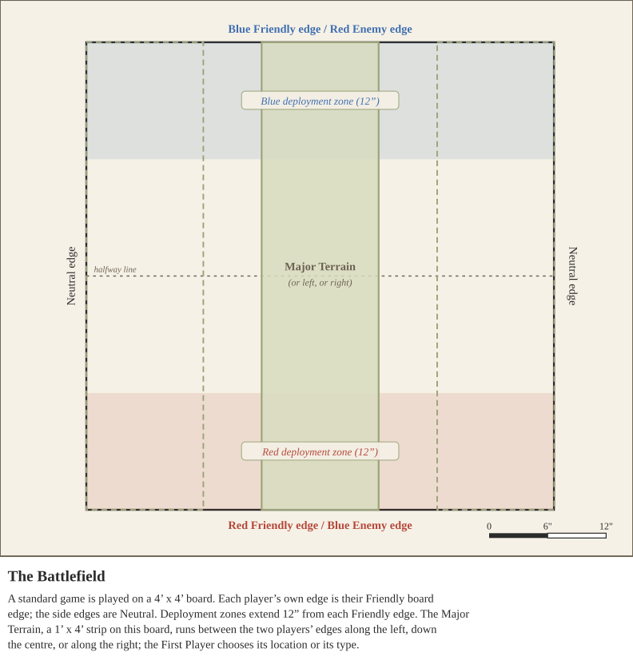
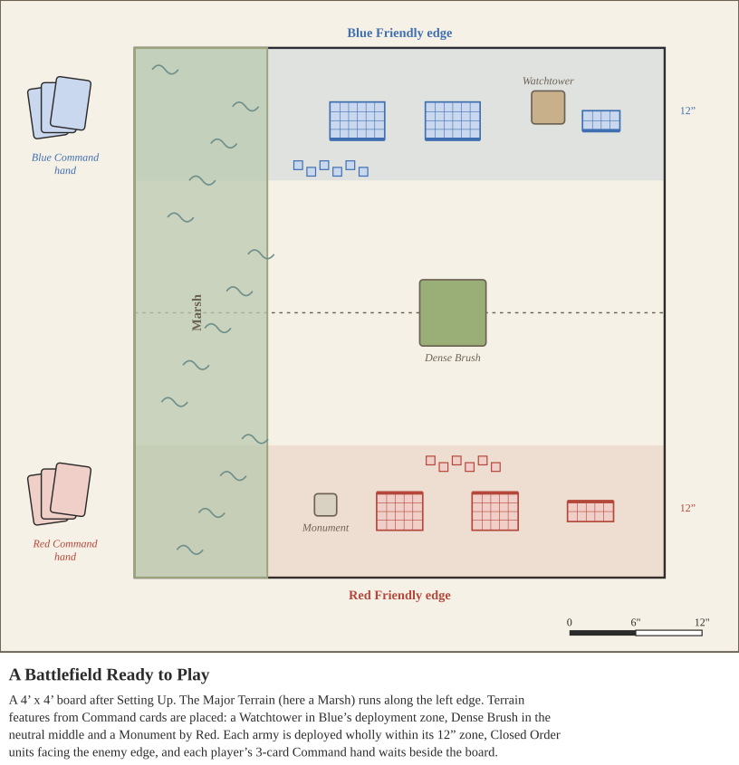
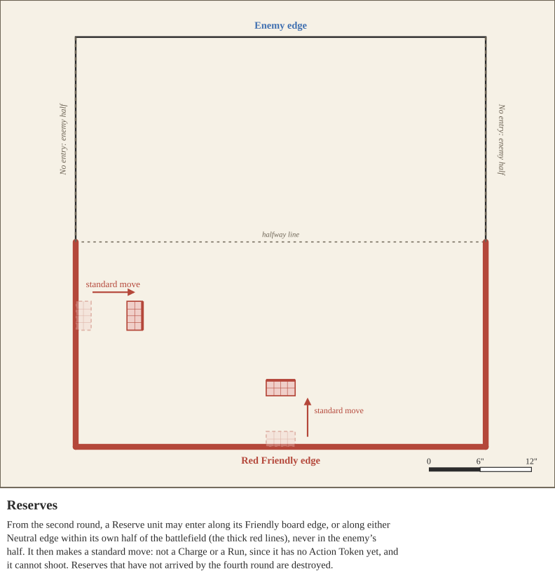

Before each battle, players set up in this order:
Standard games are played on a 4’ x 4’ board, and 2v2 games on a 4’ x 6’ board. Each player’s own board edge is their Friendly board edge, the opposing edge is the Enemy board edge, and the remaining two are Neutral board edges. In 2v2 games, teammates share a Friendly board edge.

Players may build armies below the points limit in a bid to become the First Player. Each player’s bid is the number of points their army is below the limit, up to a maximum of 25 points. Points below the limit beyond that do not add to the bid. The player with the higher bid is the First Player. If the bids are tied, the players roll off, and the winner is the First Player.
For example, in a 2000 point game, an army of 1999 points bids 1 point and an army of 1940 points bids 25 points, so the 1940 point army’s player is the First Player. If the armies were 1940 and 1975 points, both bids would be 25 points, so the players would roll off.
In 2v2 games, a team’s bid is the sum of its two players’ bids (see 2v2 Games).

Every battle has one Major Terrain: a 1’ x 4’ strip on the standard 4’ x 4’ board, or a 2’ x 4’ strip on the 4’ x 6’ board used for 2v2 games. It can be represented by a piece of felt. Before players pick their Command hands, the First Player chooses either the Major Terrain’s location or its type, and the other player makes the remaining choice.
The Major Terrain runs between the two players’ board edges, placed along the left edge, along the right edge, or down the center of the board. On smaller boards, the players should agree on any adjustments.
After the Major Terrain has been set, each player secretly picks 3 of the 6 cards in their Command deck as their hand (see Commands). Then, starting with the First Player, players take turns playing Command cards from their hands that place terrain features, one card at a time, until neither player wishes to place any more. Cards that respond to these, such as Sappers, may be played as they come up. Once all terrain is placed, players proceed to Deployment.
Each player’s deployment zone extends 12” from their Friendly board edge. Units must be deployed wholly within their deployment zone, unless a special rule such as Scout or Ambush says otherwise. Closed Order units must be deployed facing straight ahead, toward the Enemy board edge.
Players deploy one unit at a time, taking turns. Before deployment, each player counts the units they will deploy this way, not counting units held in Reserve or units with Scout or Ambush. The player with fewer units gains Byes equal to the difference. The First Player chooses who deploys first. On any of their deployment turns, a player may use a Bye to skip that turn instead of deploying a unit.
Scout and Ambush are optional. Before Byes are counted, each player declares how each of their units with Scout or Ambush will deploy: using one of those rules, or held in Reserve. A unit with both rules uses only one. A unit held in Reserve this way does not count toward the 25% Reserve limit. Command cards played during deployment, such as those that grant Scout or Ambush, must be played before Byes are counted.
A player may hold up to 25% of their army’s points in Reserve instead of deploying them. Reserve units cannot enter the battlefield until the Reserves Phase of the second round, and must be deployed by the Reserves Phase of the fourth round or they are destroyed. When deployed, a Reserve unit is placed along its Friendly board edge, or along either Neutral board edge within its own half of the battlefield. It then makes a standard move before Order Tokens are placed (see Reserves). This move is not a Charge or a Run, since the unit has no Action Token yet, and the unit cannot shoot.
Units in Reserve are not on the battlefield. They cannot use abilities or be targeted, and they do not count toward any Command card or rule that requires that unit. If a player has no units on the battlefield at the end of any Phase, they lose the battle, even if they still have units in Reserve.

In a 2v2 game, two teams of two players face each other. Each player builds and commands their own army, but a team plays as one side: unless a rule says otherwise, anything that refers to a player, their army, or their opponent refers to the whole team.
Armies. Each player builds their own army to the points limit. Each may include their own Retinue Special Characters, so a team may field two Commanders, two Army Musicians, and two Army Standard Bearers. Teammates’ units are friendly to each other, so they can Rally each other’s units and are affected by each other’s abilities.
Battlefield. 2v2 games are played on a 4’ × 6’ board. Each team’s Friendly board edge is one of the 6’ edges, and teammates share that edge and a single deployment zone 12” deep along it.
The First Player. Each player bids as normal (see The First Player), up to 25 points. A team’s bid is the sum of its two players’ bids, so up to 50 points. The team with the higher bid is the First Player, and its teammates make the First Player’s choices together. Tied bids are rolled off.
Command cards. Each player builds their own Command deck of 6 cards and picks their own hand of 3, and plays only from their own hand. A card that affects “your” units or army affects the whole team.
Deployment. Each team deploys as if it were one army. Count the units both teammates will deploy normally; the team with fewer units gains Byes equal to the difference (see Deployment). The First Player chooses which team deploys first, and the teams then take turns deploying one unit at a time, with each team choosing which of its two armies’ units to place. After all other units are deployed, the First Player chooses which team deploys all of its Scouting units first, and then which team deploys all of its Ambushing units first.
Initiative. Each team rolls a single 1d6 for Initiative and adds every bonus that either teammate has.
Orders and Activation. Each teammate takes Order Tokens for their own Active Units only (see Orders): if one player has 5 Active Units and their teammate has 6, the first takes Order Tokens 1 to 5 and the second takes 1 to 6. A team has as many turns as its teammate with the most Active Units, and Pass Tokens are compared between teams: the team with fewer turns receives Pass Tokens equal to the difference. When placing Order Tokens, teammates place theirs at the same time. On a team’s turn in the Activation Phase, both teammates flip their lowest face-down Order Token and activate those units; resolve one activation completely, then the other, in whichever order the team chooses. Once a teammate has no Order Tokens left, the other activates alone on the team’s turns. Using a Pass spends the whole team’s turn.
Shared Army Morale. Each team shares one Army Morale. Add the two armies’ Starting Army Morale together; every gain and loss of Army Morale by either teammate is applied to that shared total, and the Army Morale categories (Unease, Panic, Mass Panic and Complete Rout) are checked against it, so they affect both armies at once. A team loses when its shared Army Morale reaches Complete Rout.